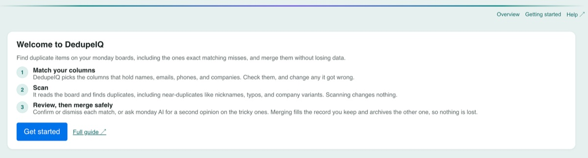
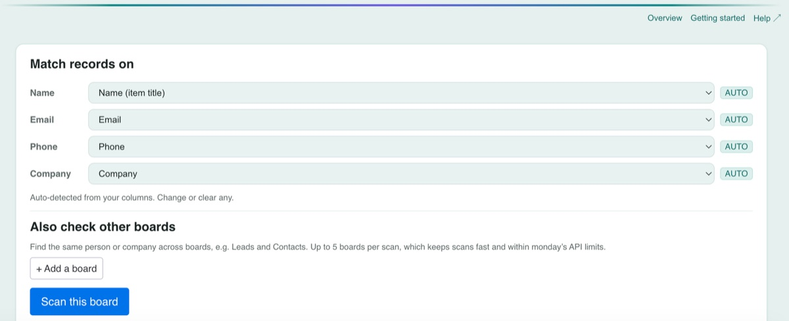
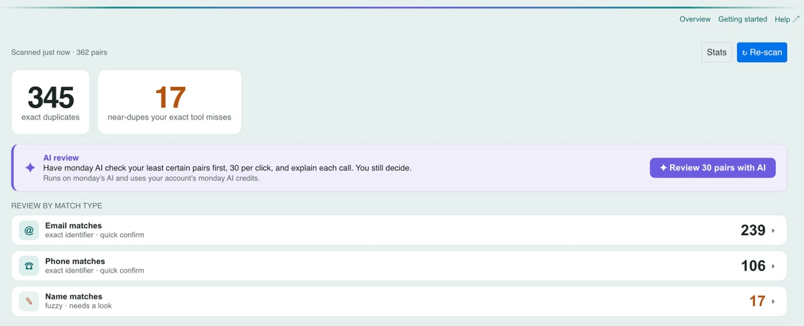
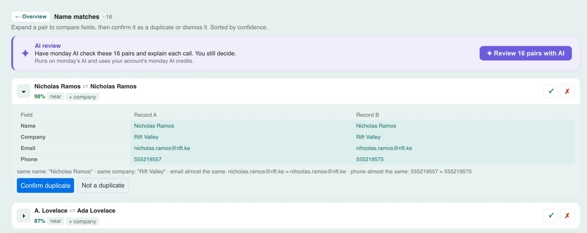
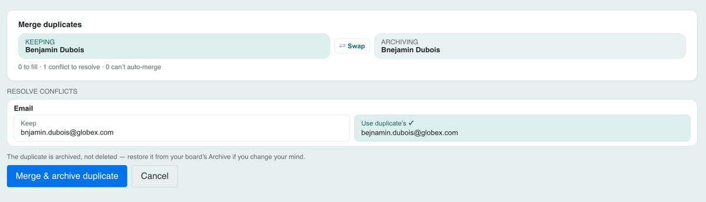
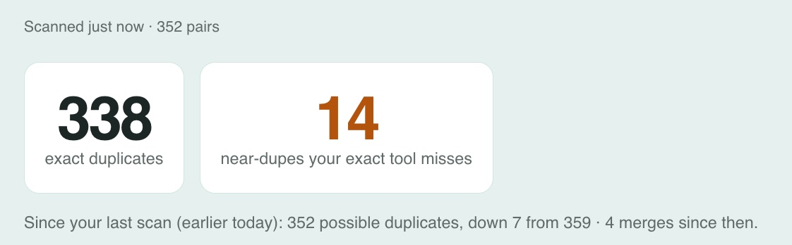
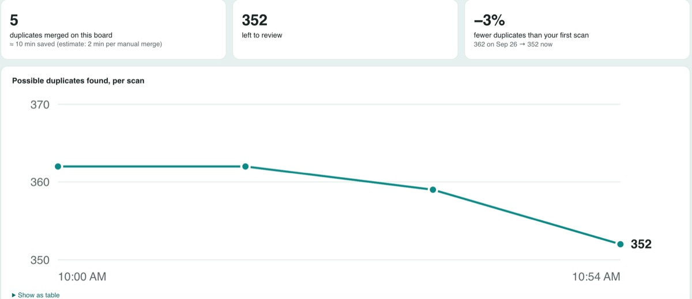

How to use DedupeIQ
DedupeIQ: Merge Duplicates
DedupeIQ finds duplicate items on your monday boards, including near-duplicates that exact matching misses (nicknames, typos, company variants), and merges them without losing data. Nothing on your board changes until you merge.
1. Install and open DedupeIQ
- Install DedupeIQ from the monday apps marketplace.
- Open the board you want to clean up, click + next to your board views, choose Apps, and add DedupeIQ.
- The first time, a short welcome explains the three steps. Click Get started.

2. Match your columns
DedupeIQ compares four details: name (the item name by default, or a column you choose, such as a Contact column on a Deals board), email, phone, and company. It picks the matching columns for you and marks them auto. Check them and change any it got wrong. Set email, phone or company to None if your board doesn't have it.

3. Scan
Click Scan this board. DedupeIQ reads the board and finds duplicates. Scanning never changes your board. The number of records a scan can read depends on your plan; if a scan reaches the limit, DedupeIQ tells you how many records it read out of the total.

4. Review the matches
- Matches are grouped by what matched (for example, same email or similar name), highest confidence first.
- Exact matches share an identical email or phone. Near matches have similar names, typos, or company variants and are worth a quick look.
- The confidence score (0 to 99) shows how strongly the two records agree. Each match also says why it matched, and the side-by-side view highlights every field the match rests on, including near-identical emails or phone numbers (a typo, a missing country code).
- Open a match to see both records side by side, then choose Confirm duplicate or Not a duplicate. You can undo either. Dismissed matches stay dismissed when you scan again.

5. AI review (optional)
Click Review with AI to have monday AI check your least certain pairs first (up to 30 per click) and explain each call: likely the same, likely different, or unsure. It runs on monday's AI and uses your monday account's AI credits. The verdict is advice only; you still confirm or dismiss.
6. Merge safely
- For a confirmed match, click Merge. Choose which record to keep; DedupeIQ suggests the more complete one.
- Empty fields on the record you keep are filled from the other record. Where both records have different values, you choose which to keep (your kept record wins by default), or click Edit to type the correct value, for example when both records have a typo in the email.
- DedupeIQ then archives the other record. It is not deleted: you can restore it from the board's archive.
- What isn't carried over: some columns can't be copied between items (for example files, subitems, and links to other boards). DedupeIQ lists these before you merge. Item updates (comments) and activity history are never copied.

7. Bulk merge (Pro and above)
In Confirmed, select several matches and click Merge selected. Matches with no conflicting values merge in one pass; any that need a decision are held back for you to review one at a time.
8. Check across boards (Pro and above)
Under Also check other boards, add boards to scan together with this one, for example Leads and Contacts. When the same person or company appears on two boards, choose which record to keep: DedupeIQ can fill its empty name, email, phone, or company from the other record, then archives the other one.
9. Track your progress
After a rescan, the results show what changed since your last scan and how many merges you made in between. Stats shows the duplicates merged on this board (with an estimate of time saved), what is left to review, how the number of duplicates has changed across scans, and merges per week.


10. Plans and limits
DedupeIQ has a Free plan and paid plans: Starter, Pro, Business, and Scale. Plans differ in how many records and boards one scan can include, and in features such as near-duplicate detail, bulk merge, and cross-board scanning. Current plans and prices are shown in monday's plan selection. Paid plans include a free trial.
11. Permissions DedupeIQ asks for
- Read boards (
boards:read): to read the items and columns of the boards you scan. Matching happens in your browser. - Write boards (
boards:write): only when you merge, to fill the record you keep and archive the other. Scanning and reviewing never write to your boards. - Use monday AI (
ai:consume): only when you click AI review, to ask monday's AI about the pairs you chose. It uses your monday account's AI credits.
If you have view-only access to a board, you can look at duplicates but not change them. Merging and reviewing need edit access.
12. Your data
- In the App, matching runs in your browser. Names, emails, phone numbers, and other column values are never stored on our servers.
- AI review (optional) sends the name, email, phone and company of the pairs you choose to monday's AI service, not to us. Its suggestion is advice; you still decide.
- DedupeIQ in monday sidekick (optional) has our server read the boards you name (or look up a record you describe), check them in memory, and answer. Nothing from your boards is kept.
- We store only IDs, counts, match scores, your review decisions, and merge records (IDs only), on monday's own infrastructure.
- Uninstalling DedupeIQ deletes everything we stored for your account. Your board keeps any merges you made.
Full details are in our Privacy Policy and Terms of Service, linked from DedupeIQ's page in the monday apps marketplace.
Need help?
Email support@alpenglowsoftware.com. We respond within 2 business days.